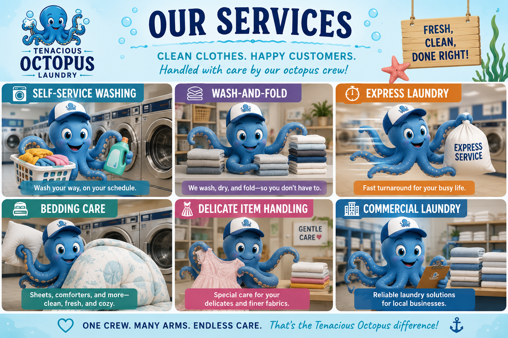

Our Laundry Services

Tenacious Octopus Laundry offers a variety of services for customers who need clean clothes without the stress. Our services include self-service washing, convenient wash-and-fold, express laundry for busy schedules, bedding and comforter care, delicate garment handling, and commercial laundry services for local businesses. Whether you're washing everyday clothing, oversized blankets, or your favorite delicate fabrics, our experienced crew treats every item with care and attention to detail. We use modern equipment and high-quality detergents to ensure every load comes out fresh, clean, and ready to wear.
Our talented octopus crew is trained to handle multiple tasks at once, making every visit fast, efficient, and enjoyable. While some octopuses carefully sort clothes by color and fabric type, others manage the washers and dryers, steam garments, fold finished laundry, and package completed orders for pickup or delivery. This teamwork allows us to provide quick turnaround times without sacrificing quality. No matter which service you choose, Tenacious Octopus Laundry is committed to delivering exceptional results with friendly service, dependable care, and a little bit of ocean-inspired fun.